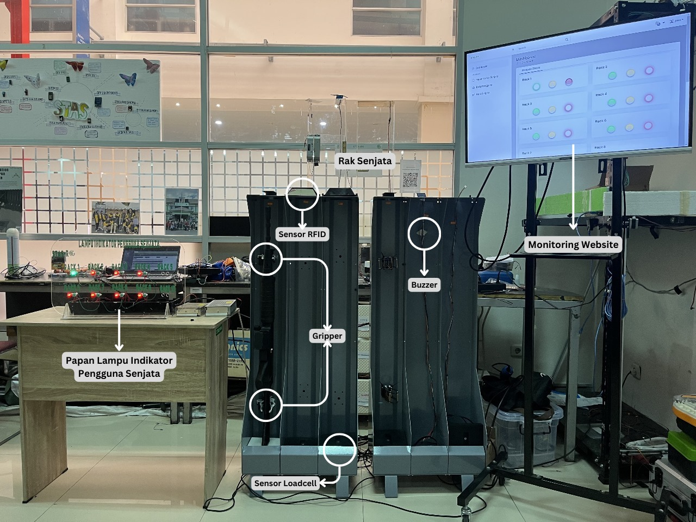

Can a Sensor Detect
a Missing Magazine?
An IoT-based monitoring prototype that connects physical sensors with a web application to identify magazine status in real time.

The Problem
What if the system could detect the change for you?
The project started from a simple problem: checking whether a stored SS1-V1 was placed on the rack with or without its magazine still required manual inspection.
The proposed system aimed to automate this identification by reading changes in the weight of the weapon and presenting the resulting status through a web-based monitoring interface.
The Idea
From a physical sensor
to a web interface.
A Load Cell was placed underneath the storage rack to detect changes in weight. The HX711 module connects the Load Cell with the Arduino, while the Ethernet Shield provides network connectivity.
Sensor data is sent to the server through an API, stored in a database, and then displayed through the web application.
Architecture
A small system,
with multiple layers.
The prototype used a master-slave architecture. One Arduino with an Ethernet Shield acted as the master, while additional Arduino boards acted as slaves for the chambers.
How It Works
The system reads weight
as a status.
The Load Cell reading is used to distinguish between several conditions of the weapon on the rack.
Weapon Out
The weapon is not detected on the rack.
Without Magazine
The weapon is detected without a magazine.
With Magazine
The weapon is detected with a magazine.
My Contribution
Where I worked
on the system.
My work focused on connecting the sensor side with the web application and evaluating how the system responded to different conditions.
Integrated Load Cell and Arduino data with the web application through an API.
Worked with the web interface and database flow for real-time monitoring.
Conducted testing across different system scenarios.
Evaluated response time and the resulting monitoring status.
Technology
The tools behind
the prototype.
Testing & Results
How fast could
the system respond?
Response-time testing was performed 30 times for two scenarios: when the weapon with a magazine was placed on the rack and when it was removed.
Average response time
Average response time
Each main response-time scenario was tested 30 times to obtain average, minimum, and maximum response times.
What Didn't Work Perfectly
Real systems are not always perfect.
During testing, the Load Cell showed weight variations of around 0.1–0.2 kg, which was attributed to instability in the Load Cell platform.
The system was nevertheless able to identify the tested weapon conditions correctly. The slave racks also showed higher response times because data had to pass through the master before reaching the web application.
From a physical sensor
to a software system.
This project taught me how a software application can interact with physical hardware. Instead of thinking only about the web interface, I had to understand how sensor data is captured, transmitted, processed, stored, and finally presented to the user.
Inside the project.
